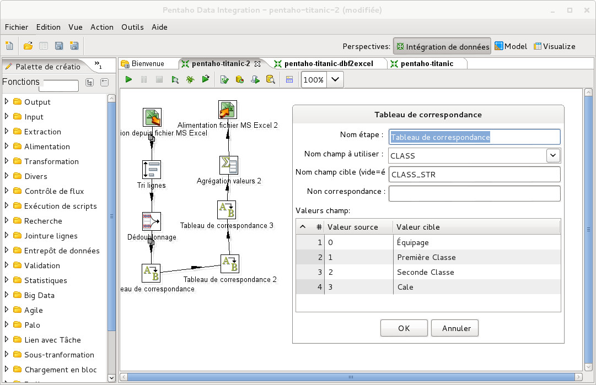

Pourquoi utiliser un ETL ?
- Automatisation des règles qualité
- Intégration des données dans le datawarehouse
Automatisation des règles qualité
Pourquoi ?
- Mesurer en continue le taux de qualité (DQM)
- Corriger ce qui peut l'être
Quand ?
- Avant l'intégration de nouvelles données
- En batchs réguliers
- Avant un export vers une base métier
Mise au point de règles
- Découverte et analyse
- Tests et améliorations
- Définition
- Implémentation
- Review
Sources pour la vérification
- Standards (n° sécurité sociale, ISBN...)
- Référentiels métiers
- Appel à un expert
Exemples
- Nombre de champs renseignés
- Format des n° de téléphone et emails
- Recherche de doublons
- Accord entre champs (homme + n° sécu commence par 1)
- Ordres de grandeurs pour les valeurs numériques (âge, montants, mesures...)
- Données consolidées (sommes, moyennes...)
Un peu d'exercice
- Lire la description du jeu de données sur les passagers du Titanic
- Quelles règles de vérification de la qualité envisager ?
Correction
- Colonne IDEN
- Pas de doublon
- Commence par un «P» majuscule suivi de 4 chiffres
- Colonne CLASS : entiers entre 0 et 3 inclus
- Colonne SEX : entier 0 ou 1
- Colonne AGE : entier 0 ou 1
- Colonne SURV : entier 0 ou 1
- Nombre de lignes = nombre de passagers du Titanic : 953 passagers et 889 membres d'équipage
- Nombre de survivants = environ 700
Convertir le fichier titanic.dbf au format Excel
Règles de mesure de la qualité des champs
Règles de mesure de la qualité des champs
Compter le nombre de survivants par classe/âge/sexe
Correspondance entre codes et valeurs
